3DF-Zepyhr adalah salah satu aplikasi untuk melakukan rekonstruksi 3D pada suatu objek yang diambil dari multi angle. Aplikasi ini terdapat fitur berbayar dan tidak berbayar. Disini saya menggunakan fitur yang tidak berbayar. Anda bisa mengunduh aplikasi tersebut pada web resmi 3DF-Zepyhr. Saya disini akan memberikan tutorial cara menggunakan 3DF-Zepyhr dari foto kaki yang diambil dari beberapa angle kamera. Berikut adalah langkah - langkahnya:
1. Masuk ke aplikasi 3DF Zephyr
2. Memasukkan foto multi angle ke 3DF-Zepyhr
Drag foto yang ingin digunakan untuk rekonstruksi 3D seperti gambar berikut:
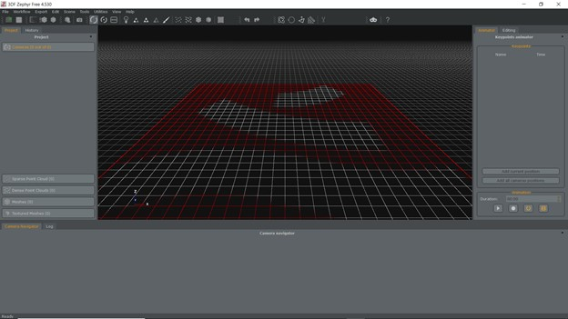
3. Klik Next pada jendela dialog berikut

4. Klik Next untuk meneruskan dan melihat image
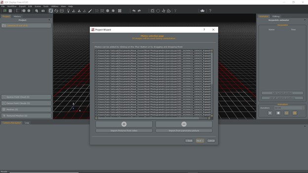
5. Klik Next lagi untuk melakukan kalibrasi kamera
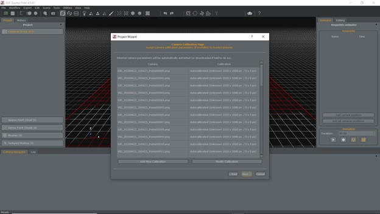
6. Pilih Category dan Preset yg ingin digunakan
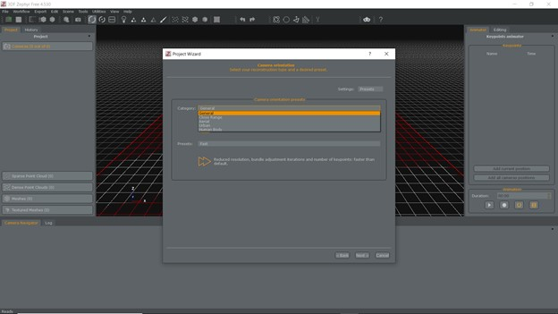
Catatan: Category ini mendefinisikan objek apa yg akan diproses.
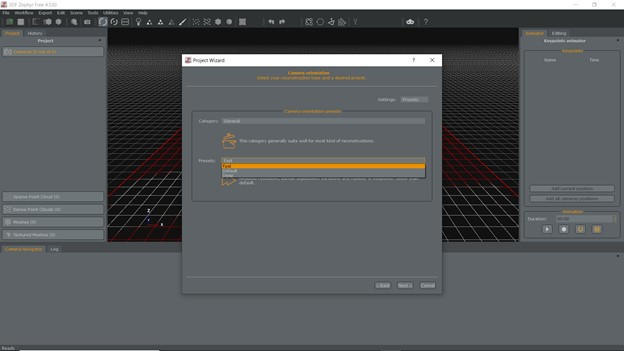
Catatan: Preset mempengaruhi proses rekontruksi baik cepat ataupun lambat dan tentunya mempengaruhi hasil yg didapat.
7. Klik Run pada jendela dialog berikut
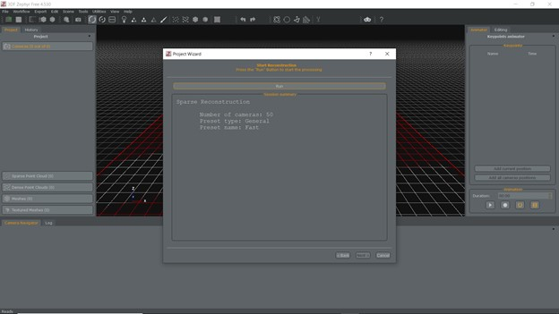
Keterangan jumlah kamera, preset, dan kategori muncul pada jendela dialog ini, serta bisa kita edit ulang dengan menekan Back pada jendela dialog.
8. Tunggu hingga proses rekontruksi selesai.
Catatan pada proses ini lumayan lama jika kita memilih preset deep dan banyak jumlah kamera yg terdeteksi. Artinya semakin lama proses rekontruksi, hasil yang didapat juga dapat lebih baik, dengan catatan spesifikasi laptop yang digunakan memadai.
9. Hasil point cloud dense
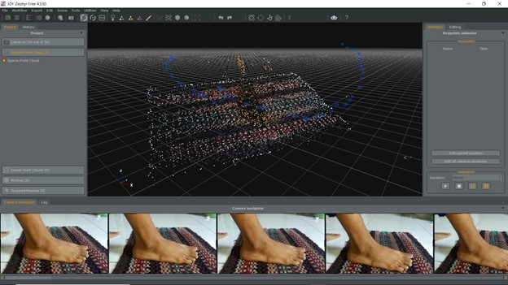
10. Padatkan point cloud
Pada Workflow pilih advanced dan kemudian pilih Dense Point seperti pada gambar dibawah ini:
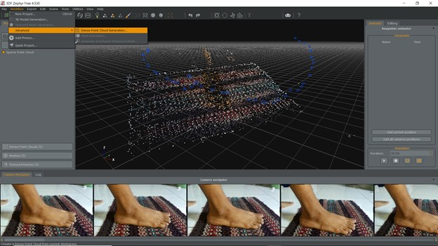
Klik Next
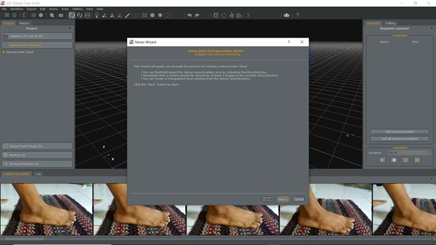
11. Pilih Category dan Preset
Catatan: Pada preset jika memilih High Details maka proses akan semakin lama dan hasilnya akan lebih bagus.
kemudian klik Next
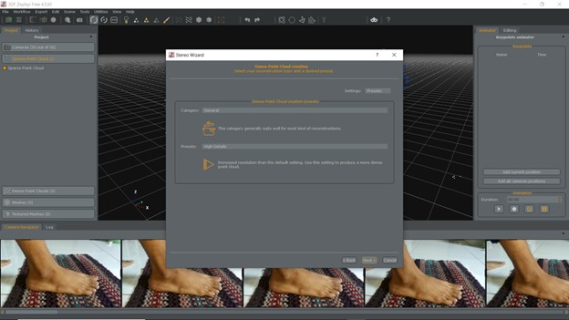
12. Klik Run jika dirasa sudah selesai dalam pengaturan
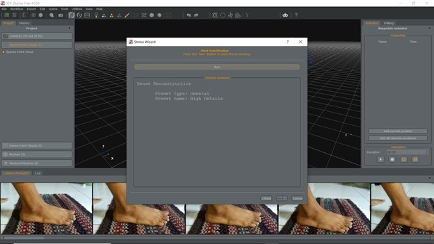
Tunggu proses berjalan
13. Hasil pemadatan
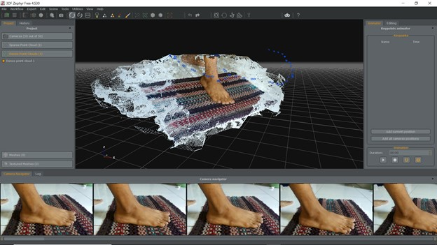